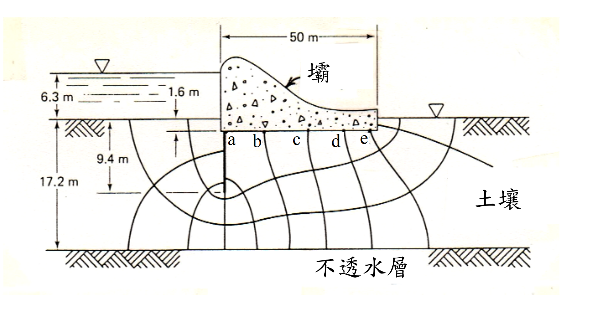
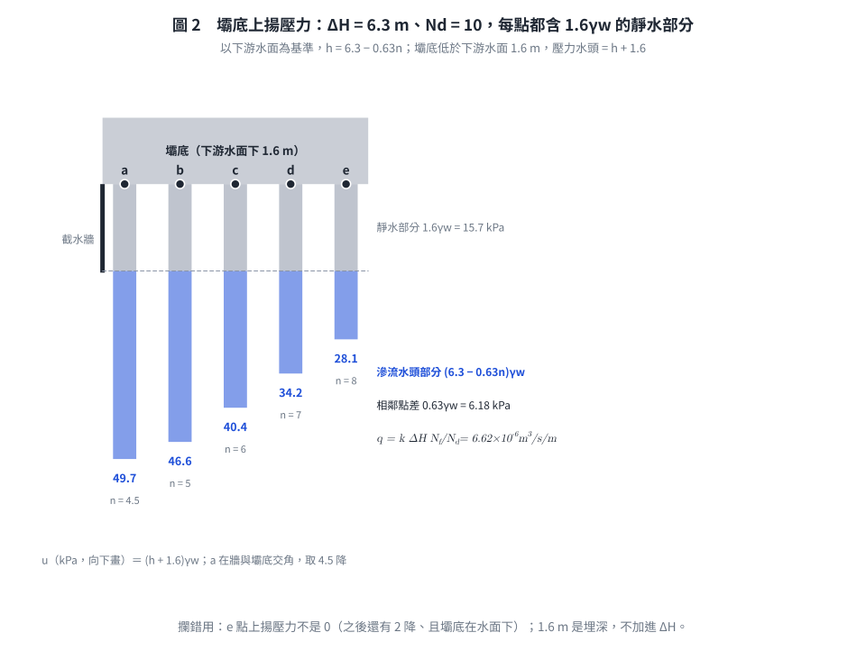

📄 題目正本：考卷原文・附圖・判讀清單（已確認）
SM-2018-3 題目正本
本檔只記錄考卷上寫了什麼、圖上畫了什麼，不含任何解法。解析見同資料夾
SM-2018-3.md。
判讀清單已確認（凍結）；本檔原則上不再修改（改動須回考卷原圖並記 log）。
| 項目 | 內容 |
|---|---|
| 考卷 | raw/exams/SM-2018_土壤力學與基礎設計.pdf 第 1 頁（頁次 2－1），第三題 |
| 考年 | 民國 107 年（2018） |
| 配分 | 25 分（㈠ 5 分、㈡ 20 分） |
| 附圖 | SM-2018-3-fig-1.png（混凝土壩、截水牆與流網；既有證據圖完整、無雜訊，沿用） |
| 判讀狀態 | 已確認（2026-11-15 關卡一：使用者授權依建議判讀確認；#1–#4 影響答案，依建議定案；轉錄 2026-11-15；PyMuPDF 110 dpi 全頁目視，附圖 400–700 dpi 局部放大（內嵌點陣影像，原生約 150 dpi）；PDF 文字層核對逐字原文；盲讀後才比對既有解析） |
1. 考卷原文（逐字）
三、某混凝土壩，其下方垂直截水牆及流線網如下圖所示。圖中土壤的滲透係數 k = 3.5×10⁻⁶ m/s。請計算：
㈠壩底土層之滲流損失（seepage loss）。（5 分）
㈡於 a、b、c、d、e 點之上揚壓力。（20 分）
2. 考卷給的公式、附表與參數
- 土壤滲透係數 $k = 3.5\times10^{-6}$ m/s。
- 圖上尺寸：上游水深 6.3 m、壩底埋深 1.6 m、截水牆底深 9.4 m、不透水層深 17.2 m、壩底寬 50 m。
- 流網（流線與等勢線）畫在圖上，沒有直接給 $N_f$、$N_d$。
- 沒有給：$\gamma_w$、壩長（滲流損失以單位寬度計）。
- 卷首注意事項：㈠可以使用電子計算器。㈡不必抄題，作答時請將試題題號及答案依照順序寫在試卷上，於本試題上作答者，不予計分。㈢本科目除專門名詞或數理公式外，應使用本國文字作答。
3. 附圖

圖面文字照錄：50 m、壩、6.3 m、1.6 m、9.4 m、17.2 m、a、b、c、d、e、土壤、不透水層。
本題附圖是流網，不重繪：流網的格線本身就是題目資料，重繪等於自己編流網（同曲線圖）。
4. 判讀清單
| # | 項目 | 判讀 | 圖上／題文依據 | 把握 |
|---|---|---|---|---|
| 1 | 下游地表與水位 | 下游地表與上游地表在同一高程（圖上同一條水平線延續到壩兩側），下游水位 ▽ 在地表；壩底比兩側地表低 1.6 m | 附圖 400 dpi：左右地表線同在像素 y = 345，壩底在 y = 385 | 確定（解讀；影響答案） |
| 2 | 總水頭差 | 上、下游水位差 = 上游水深 6.3 m（上游水面量到地表；下游水位在地表） | 6.3 m 尺寸線兩端：上游水面、地表；#1 |
不確定（影響答案）；依建議定案 |
| 3 | 流槽數 $N_f$ | 3：流線依序為壩底＋截水牆面、兩條內部流線、不透水層面（共 4 條流線、3 個流槽） | 附圖 700 dpi 逐條追線：兩條內部流線自上游地表垂直入土、繞過牆底、自下游地表出土 | 不確定（影響答案）；依建議定案 |
| 4 | 等勢降數 $N_d$ 與各點位置 | 沿壩底＋牆面流線，自上游地表起依序：①交牆上游面（較高）②交牆上游面（近牆底）③牆底正下方的垂直線 ④交牆下游面 ⑤過 b ⑥過 c ⑦過 d ⑧過 e ⑨自壩下游角往右下延伸的短線（未畫到不透水層，仍依序與兩條內部流線正交）⑩下游地表 → $N_d$ = 10；b、c、d、e 分別在第 5–8 條等勢線上。a 在牆與壩底交角，不在等勢線上，介於第 4、5 條之間（沿接觸面距離約在中點，約 4.5 降） | 附圖 700 dpi；b、c、d、e 為等勢線與壩底交點的實心點 | 不確定（影響答案）；依建議定案 |
| 5 | 截水牆 | 自壩上游端壩底往下，牆底在地表下 9.4 m（壩底下 7.8 m）；9.4 m 尺寸線上端在地表、下端在牆底虛線 |
附圖：比例 17.2 m ↔ 728 px，9.4 m 下端落在牆底虛線 | 確定 |
| 6 | 不透水層 | 地表下 17.2 m（尺寸線由地表量起） | 附圖 17.2 m |
確定 |
| 7 | 壩底寬 | 50 m（水平方向未依比例） | 附圖 50 m |
確定 |
| 8 | 上揚壓力定義 | a–e 為壩底面上的點，所求為該處孔隙水壓 | 題文；附圖點位 | 確定 |
| 9 | 滲流損失 | 單位壩長的滲流量（考卷未給壩長） | 題文 | 確定（解讀） |
| 10 | 考卷沒有給 | $\gamma_w$、壩長、$N_f$、$N_d$ 數值 | 全題 | 確定 |
轉錄：2026-11-15（SM-U1-2 題目正本推廣・批 1）
確認：2026-11-15 使用者授權依建議判讀確認（SM-U1-2 題目正本推廣・批 1，關卡一；使用者指示「要我確認的請依你建議」）；⚠ #1–#4 與舊解讀法不同、影響答案，待使用者複核
考題編號：SM-2018-3
主分類： SM-U1-2 土壤滲透
副分類： 無
分析法： 有效應力法
標籤： 流網 滲流量 流槽數Nf 等勢降數Nd 上揚壓力 全水頭 Darcy定律
1. 題目（考卷原文見題目正本）
考卷原文、公式／附表、附圖與判讀清單（已確認）見
SM-2018-3-problem.md。本節只列解題時最容易讀錯的地方與本解使用的記號；題意以題目正本為準。
常見誤讀
| 項目 | 正確判讀 | 常見誤讀 |
|---|---|---|
| 總水頭差 | 上、下游地表同高、下游水位在地表，上下游水位差 = 6.3 m（題目正本 #1、#2，依建議定案） | 把下游地表讀成與壩底同高、比上游低 1.6 m，取 7.9 m（本解 2026-11-15 前即如此） |
| 流槽數 | $N_f$ = 3（兩條內部流線，#3） | 數成 $N_f$ = 4 |
| 等勢降與點位 | $N_d$ = 10；b、c、d、e 在第 5–8 條等勢線，a 在牆與壩底交角、介於第 4、5 條之間（約 4.5 降）（#4） | a、b、c、d、e 依序取 6–10 降，e 點上揚壓力為 0 |
| 上揚壓力 | 壩底在下游水位下 1.6 m，壓力水頭要加上這 1.6 m（#1） | 把壩底當成下游水位高程 |
本解記號： $\Delta H$ 上下游水位差；$N_f$ 流槽數；$N_d$ 等勢降數；$n_i$ 各點累積降數；$h_p$ 壓力水頭；$u$ 上揚壓力。（附圖為流網，不重繪，見題目正本 §3。）
2. 考題核心精神與出題者意圖 (Core Concepts & Examiner's Intent)
- 流線網判讀能力：測驗考生是否能正確數出流槽數（$N_f$）與等勢降數（$N_d$），以及壩底各點位於第幾條等勢線。
- 幾何關係推導：需從圖面尺寸標註判斷上下游總水頭差（$\Delta H$）與壩底的位置水頭——上下游地表同高，壩底埋在地表下 1.6 m。
- 上揚壓力計算：測驗考生是否清楚上揚壓力（孔隙水壓）與總水頭、位置水頭之間的關係（$u = (h - z)\gamma_w$），壩底低於下游水位時要把埋深算進壓力水頭。
3. 解題戰略地圖與陷阱分析 (Strategic Roadmap & Trap Analysis)
- 步驟 1：幾何尺寸與水頭差解析
- 圖上左右地表是同一條水平線延續到壩兩側（題目正本 #1），下游 ▽ 在地表；6.3 m 由上游水面量到地表，1.6 m 由地表量到壩底，9.4 m、17.2 m 由地表量到截水牆底與不透水層。
- 因此 $\Delta H$ = 上游水面 − 下游水面 = 6.3 m；壩底在下游水位下 1.6 m。
- 步驟 2：判讀流線網參數
- 流槽數 $N_f$：兩條內部流線＋兩條邊界流線（壩底與截水牆面、不透水層面）→ 3 個流槽。
- 等勢降數 $N_d$：沿壩底＋截水牆面流線，由上游地表數到下游地表共 10 個區間（含自壩下游角伸出的短等勢線）；b、c、d、e 分別在第 5、6、7、8 條等勢線上，a 在牆與壩底交角、介於第 4、5 條之間（約 4.5 降）。
- 步驟 3：計算滲流量與各點上揚壓力
- 代入流線網公式 $q = k \cdot \Delta H \cdot \frac{N_f}{N_d}$ 計算單位壩長的滲流損失。
- 以下游水面（地表）為基準，$h_i = \Delta H - n_i \Delta h$，壩底 $z = -1.6$ m，$u_i = (h_i + 1.6)\gamma_w$。
⚠️ 陷阱分析：
- 把下游地表讀低 1.6 m：圖上 1.6 m 是壩底埋深，不是上下游地表高差。若取 $\Delta H$ = 7.9 m，滲流量與上揚壓力全部偏離。
- 忘了壩底埋深：壩底比下游水位低 1.6 m，壓力水頭＝總水頭＋1.6 m；漏掉會使每點少 $1.6\gamma_w$ = 15.7 kPa，e 點甚至算成 0。
- 流槽數多數一個：邊界流線是壩底＋牆面與不透水層面，內部只有兩條流線，$N_f$ = 3。
3.5 變數層次分析 (Variable Hierarchy Analysis)
最終目標
求出壩底土層單位寬度之滲流損失，以及壩底 a, b, c, d, e 五點之上揚壓力。
本題關鍵公式（依計算順序）
$$ q = k \cdot \Delta H \cdot \frac{N_f}{N_d} $$
$$ \Delta h = \frac{\Delta H}{N_d} $$
$$ h_i = \Delta H - n_i \cdot \boxed{\Delta h} $$
$$ u_i = ( \boxed{h_i} - z_i ) \cdot \gamma_w, \quad z_i = -1.6\text{ m} $$
L1：題目直接給定
| 符號 | 數值 | 說明 |
|---|---|---|
| $k$ | $3.5 \times 10^{-6}$ m/s | 土壤滲透係數 |
| 上游水深 | 6.3 m | 上游水面至地表 |
| 壩底埋深 | 1.6 m | 地表至壩底 |
| $\gamma_w$ | $9.81$ kN/m³ | 水的單位重（考卷未給） |
L2：需知識點推導
流線網參數判讀
| 符號 | 公式／來源 | 卡關? |
|---|---|---|
| $N_f$ | 圖面判讀：3（題目正本 #3） | |
| $N_d$ | 圖面判讀：10（#4） | |
| $n_i$ | 圖面判讀：a 4.5、b 5、c 6、d 7、e 8（#4） | |
水頭與幾何關係
| 符號 | 公式／來源 | 卡關? |
|---|---|---|
| $\Delta H$ | 上游水深（上下游地表同高、下游水位在地表）= 6.3 m | |
| $z_i$ | 以下游水面為基準，壩底 $z = -1.6$ m | |
L3：深層知識（不懂就卡住）
| 知識點 | 說明 | 卡關? |
|---|---|---|
| 總水頭差判斷 | 總水頭差只看上下游水面高差；壩底埋深影響的是壓力水頭，不影響 $\Delta H$。 | |
| 節點降數判讀 | 沿邊界流線數等勢線：牆上游面兩條、牆底正下方一條、牆下游面一條，壩底 b–e 各一條，再加壩下游角的短線，共 10 降。a 在牆與壩底交角，夾在第 4、5 條之間。 | |
| 上揚壓力 | $u = (h - z)\gamma_w$；壩底在下游水面下，即使在出口附近仍有 $1.6\gamma_w$ 以上的水壓。 |
4. 步驟化詳細計算過程 (Step-by-Step Detailed Calculation)
(一) 壩底土層之滲流損失
Step 1：判定總水頭差與幾何條件
由圖面尺寸可知（題目正本 #1、#2、#5、#6）：
- 上游水深（水面至地表）= $6.3$ m；下游水位在地表；左右地表同高
- 壩底在地表下 $1.6$ m；截水牆底在地表下 $9.4$ m（壩底下 7.8 m）；不透水層在地表下 $17.2$ m
設下游水面（＝地表）為高程基準面（$z = 0$）：
- 上游水面高程：$z_{up} = +6.3$ m
- 下游水面高程：$z_{down} = 0$ m
- 總水頭差：$\Delta H = 6.3 - 0 = 6.3$ m
- 壩底高程：$z_{base} = -1.6$ m
Step 2：判讀流線網參數
- 流槽數 ($N_f$)：流線依序為壩底＋截水牆面、兩條內部流線、不透水層面，共 4 條流線、$N_f = 3$。
- 等勢降數 ($N_d$)：沿壩底＋截水牆面流線由上游地表起數：①、② 交牆上游面，③ 牆底正下方的垂直線，④ 交牆下游面，⑤–⑧ 分別過 b、c、d、e，⑨ 自壩下游角往右下延伸的短線，⑩ 下游地表 → $N_d = 10$。
- 每降水頭損失：$\Delta h = \frac{\Delta H}{N_d} = \frac{6.3}{10} = 0.63$ m。
Step 3：計算滲流損失
$$ q = k \cdot \Delta H \cdot \frac{N_f}{N_d} $$
$$ q = 3.5 \times 10^{-6} \times 6.3 \times \frac{3}{10} = 6.615 \times 10^{-6} \text{ m}^3\text{/s/m} $$
$\boxed{q = 6.62 \times 10^{-6} \text{ m}^3\text{/s/m} \;(\approx 0.572 \text{ m}^3\text{/day/m})}$
(二) 於 a、b、c、d、e 點之上揚壓力
以下游水面為基準，壩底各點 $z_i = -1.6$ m。
總水頭 $h_i = \Delta H - n_i \Delta h = 6.3 - 0.63\,n_i$；壓力水頭 $h_{p,i} = h_i - z_i = h_i + 1.6$；上揚壓力 $u_i = h_{p,i}\,\gamma_w$。
1. a 點
- 累積降數 $n_a \approx 4.5$（介於第 4、5 條等勢線之間，沿接觸面約在中點）
- $h_a = 6.3 - 4.5 \times 0.63 = 6.3 - 2.835 = 3.465$ m，$h_{p,a} = 3.465 + 1.6 = 5.065$ m
- $u_a = 5.065 \times 9.81 = 49.69$ kPa
$\boxed{u_a \approx 49.7 \text{ kPa}}$
2. b 點
- 累積降數 $n_b = 5$
- $h_b = 6.3 - 5 \times 0.63 = 3.15$ m，$h_{p,b} = 3.15 + 1.6 = 4.75$ m
- $u_b = 4.75 \times 9.81 = 46.60$ kPa
$\boxed{u_b = 46.6 \text{ kPa}}$
3. c 點
- 累積降數 $n_c = 6$
- $h_c = 6.3 - 6 \times 0.63 = 2.52$ m，$h_{p,c} = 2.52 + 1.6 = 4.12$ m
- $u_c = 4.12 \times 9.81 = 40.42$ kPa
$\boxed{u_c = 40.4 \text{ kPa}}$
4. d 點
- 累積降數 $n_d = 7$
- $h_d = 6.3 - 7 \times 0.63 = 1.89$ m，$h_{p,d} = 1.89 + 1.6 = 3.49$ m
- $u_d = 3.49 \times 9.81 = 34.24$ kPa
$\boxed{u_d = 34.2 \text{ kPa}}$
5. e 點
- 累積降數 $n_e = 8$
- $h_e = 6.3 - 8 \times 0.63 = 1.26$ m，$h_{p,e} = 1.26 + 1.6 = 2.86$ m
- $u_e = 2.86 \times 9.81 = 28.06$ kPa
$\boxed{u_e = 28.1 \text{ kPa}}$
（交叉驗算：改以壩底為基準，上游總水頭 7.9 m、下游 1.6 m，水頭損失仍是 6.3 m；$u_a = (7.9 - 4.5 \times 0.63)\gamma_w = 49.69$ kPa、$u_e = (7.9 - 8 \times 0.63)\gamma_w = 28.06$ kPa，相同。若取 $\gamma_w$ = 10 kN/m³：a–e 為 50.7、47.5、41.2、34.9、28.6 kPa。）

圖 2 壩底埋在下游水面下 1.6 m，每點都有 $1.6\gamma_w$ 的靜水部分；e 點之後還有 2 降，上揚壓力不會是 0。攔下「把 1.6 m 加進 $\Delta H$」與「e 點上揚壓力取 0」的錯誤（本解 2026-11-15 前即如此）。題給流網不重繪。
5. 關鍵爭議點與進階探討 (Critical Issues & Advanced Discussion)
- 流網判讀的不確定性（題目正本 #3、#4，依建議定案）：
- $N_d$ 是否計入自壩下游角伸出的短等勢線：不計時 $N_d$ = 9、$\Delta h$ = 0.7 m，$q = 7.35 \times 10^{-6}$ m³/s/m，b–e 為 43.2、36.3、29.4、22.6 kPa，a（4.5 降）46.6 kPa。本解依圖上該線與兩條內部流線正交，計入。
- a 點降數：a 在牆與壩底的交角、不在等勢線上。取 4 降（與牆下游面那條同電位）得 52.8 kPa，取 5 降（同 b）得 46.6 kPa；本解取兩者之間 4.5 降，49.7 kPa。
- 本解 2026-11-15 前的讀法（對照）：把下游地表讀成與壩底同高（$\Delta H$ = 6.3 + 1.6 = 7.9 m）、$N_f$ = 4、a–e 取 6–10 降，得 $q = 1.106 \times 10^{-5}$ m³/s/m、$u_a$–$u_e$ = 31.0、23.25、15.5、7.75、0 kPa。考卷左右地表同為一條水平線，1.6 m 是地表到壩底的埋深，該讀法使出口附近的上揚壓力少算約 28 kPa，偏不安全。
- 上揚壓力分布：b→e 每降 0.63 m，上揚壓力等差遞減 6.18 kPa；出口 e 附近仍有約 28 kPa，因為壩底埋在下游水面下 1.6 m（$1.6\gamma_w$ = 15.7 kPa 是任何點都有的靜水部分）。
修正日期：2026-11-15（§1 改為指向題目正本 SM-2018-3-problem.md；附圖為流網不重繪；§2 以後待階段 D 勘誤；§4（二）後 補解題圖解 figs/SM-2018-3-fig-2-uplift.svg；非勘誤）
修正日期：2026-11-15（FIX：ΔH 6.3 m、Nf 3——依已確認題目正本 #1–#4 重寫 §2–§5：$\Delta H$ 7.9 → 6.3 m、$N_f$ 4 → 3、a–e 降數 6–10 → 4.5、5–8、壩底高程改為下游水面下 1.6 m；$q$ 1.106×10⁻⁵ → 6.62×10⁻⁶ m³/s/m；$u_a$–$u_e$ 31.0、23.25、15.5、7.75、0 → 49.7、46.6、40.4、34.2、28.1 kPa；§1 移除待勘誤警示。驗證：回考卷 2018 年第 1 頁附圖 110／400 dpi 目視，腳本重算 MISMATCHES: 0，改以壩底為基準交叉驗算；依 2026-11-15 獨立盲解比對）